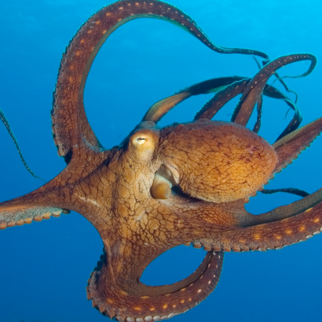
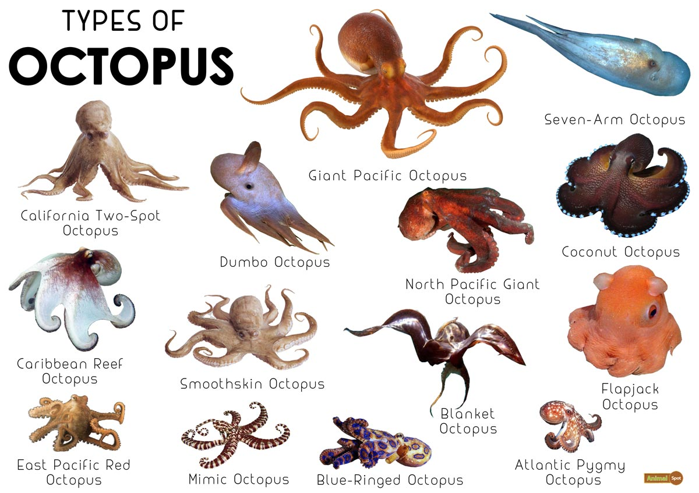

Octopuses

And yes, it is octopuses because you can't put a greek ending like "-pi" on the end of a word with latin origins like "octopus"!
Octopuses can live in virtually any type of ocean environment and they have for hundreds of years. This is proven by how widespread the legends are about them. Theres Akkorokamui from Ainu folklore, Cecaelia from Asian and Native American mythology, Kanaloa from Hawaii, and most famously Kraken from Scandinavia

There are roughly 300 species of octopus, ranging from the adorable dumbo octopus(they live in deeper water then any other octopus) to the giant pacific octopus whose also adorable (the biggest one ever recorded was 600 pounds and measured 30 feet across)
Octopuses are really old!! The oldest fossil found is about 296 million years old!!!
Octopus ink does more then act as a puff of smoke so an octopus can escape, it also has a compound called tyrosinase, which blinds and confuses predators by messing up their sense of taste and smell. If an octopus can't escape it's own ink cloud, it will die (thank goodness they can swim quickly!)